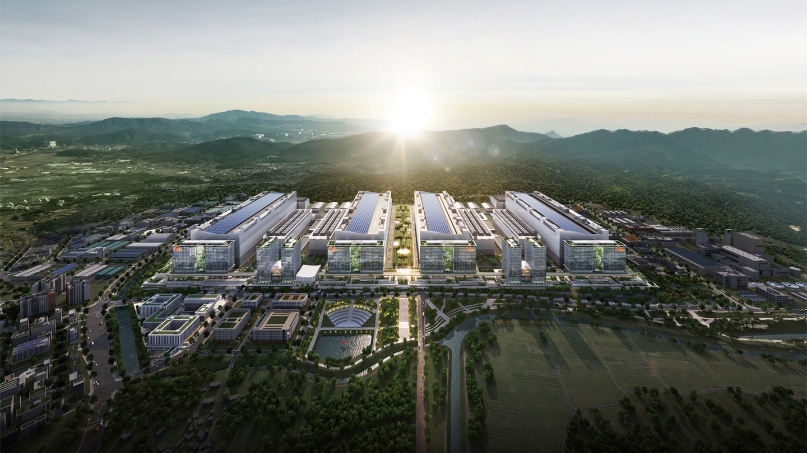
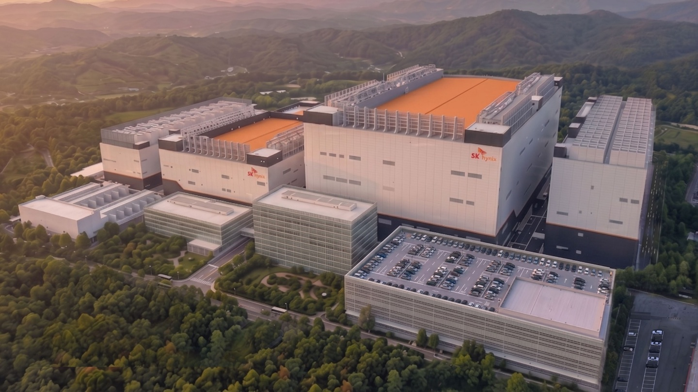

투자 규모
SK hynix는 한국 시간으로 오늘, 용인 Y2 및 청주 M17 두 곳의 파(Fab)에 총 54조 원을 투자하기로 하는 이사회의 결정을 발표했습니다. 구체적으로 용인 Y2에는 35.2조 원이, 청주 M17에는 19.1조 원이 투입됩니다.
전략적 배경
SK hynix는 AI 시대에 단순히 기술 경쟁력만으로는 우위를 유지하기에 충분하지 않으며, 고객이 요구하는 시점에 충분한 양의 제품을 공급할 수 있는 능력이 진정한 경쟁력이라고 밝혔습니다. 이번 투자 결정은 시장 수요에 대한 면밀한 평가를 바탕으로 이루어졌습니다.
용인 Y2 파
용인 Y2는 경기도 용인시 처인구 일대의 용인 반도체 클러스터 내 두 번째 파로, DRAM 생산 기지로 운영될 예정입니다. 해당 시설의 주요 사양은 다음과 같습니다.
- 총 건축 면적: 약 113만 제곱미터
- 착공 계획: 내년 7월
- 첫 클린룸 가동: 2029년 6월 (HBM 등 차세대 DRAM 제품 생산)
이번 투자 금액에는 Y2 직원들을 위한 사무 및 복지 시설인 '지원동', 개발·테스트·분석이 통합된 '연구개발 종합 센터' 및 관련 부대시설 건설 비용이 포함됩니다. 용인 반도체 클러스터의 2단계 투자는 2031년 10월까지 단계적으로 진행될 예정입니다.
또한, 용인 반도체 클러스터의 첫 번째 파인 Y1은 현재 공사가 원활하게 진행되고 있으며 내년 2월에 첫 클린룸이 가동될 예정입니다.
청주 M17 파
M17은 청주 캠퍼스 내 NAND 플래시 생산 시설을 확장하며 기존 생산 라인과 시너지를 창출할 수 있도록 설계되었습니다. 현재 부지, 전력 및 용수 등 기반 시설이 기본적으로 준비된 상태입니다.
- 총 건축 면적: 약 68만 제곱미터
- 착공 계획: 내년 2월
- 첫 클린룸 가동: 2028년 12월
M17의 투자 기간은 2031년 4월까지 지속되며, 사업 진행 상황에 따라 단계적으로 실시됩니다.
총평
SK hynix는 AI 시장 수요에 대응하기 위해 용인 Y2와 청주 M17에 총 54조 원을 투자하여 HBM 및 NAND 플래시 생산 능력을 강화합니다. 이번 투자는 기술력과 더불어 적기 공급 능력을 확보함으로써 시장에서의 경쟁 우위를 공고히 하는 데 목적이 있습니다.
投资概况
SK hynix 董事会已批准对龙仁 Y2 和清州 M17 两座晶圆厂进行大规模投资，旨在应对 AI 时代对产品交付量和时效性的高要求。
- 总投资额：54 万亿韩元（约合 2,567.16 亿元人民币）
- 龙仁 Y2 投资额：35.2 万亿韩元（约合 167.34 亿元人民币）
- 清州 M17 投资额：19.1 万亿韩元（约合 908.01 亿元人民币）
龙仁 Y2 项目详情
龙仁 Y2 将作为 DRAM 生产基地，重点用于生产 HBM 等新一代产品。该项目包含办公设施、研发综合中心及相关配套建设。
- 建筑面积：约 113 万平方米
- 关键时间点：计划明年 7 月开工，2029 年 6 月启用首个无尘室
- 基础设施状态：电力、供水等基础建设已完成 99%
- 配套设施：包含研发综合中心（集成开发、测试、分析）及相关配套
清州 M17 项目详情
清州 M17 将用于扩展 NAND 闪存生产设施，旨在与现有产线协同增效。目前厂址及基础配套已基本就绪。
- 建筑面积：约 68 万平方米
- 关键时间点：计划明年 2 月开工，2028 年 12 月启用首个无尘室
总结
SK hynix 通过在龙仁 Y2 和清州 M17 两大晶圆厂的巨额投资，旨在强化其在 DRAM（特别是 HBM）和 NAND 闪存领域的产能布局。此举是基于对 AI 市场需求评估后的战略决策，旨在确保在关键时间点提供充足的高性能产品。
投資規模
SK hynixは本日（韓国時間）、龍仁Y2および清州M17の2つのファブに計54兆ウォンを投資することを決定したと発表しました。内訳として、龍仁Y2には35.2兆ウォン、清州M17には19.1兆ウォンが投入されます。
戦略的背景
SK hynixは、AI時代において単に技術的な競争力だけでは優位性を維持するのに十分ではなく、顧客が求めるタイミングで十分な量の製品を供給できる能力こそが真の競争力であると強調しています。今回の投資決定は、市場需要に対する綿密な評価に基づいて行われました。
龍仁Y2ファブ
龍仁Y2は、京畿道龍仁市處仁区の龍仁半導体クラスター内にある2番目のファブであり、DRAM生産拠点として運営される予定です。同施設の主な仕様は以下の通りです。
- 総建築面積：約110万平方メートル
- 着工計画：来年7月
- 最初のクリーンルーム稼働：2029年6月（HBMなど次世代DRAM製品の生産）
今回の投資額には、Y2従業員のための事務および福利厚生施設である「支援棟」、開発・テスト・分析を統合した「研究開発総合センター」、および関連する付帯施設の建設費用が含まれています。龍仁半導体クラスターの第2段階投資は、2031年10月まで段階的に進行する予定です。
また、龍仁半導体クラスターの最初のファブであるY1は現在建設が順調に進んでおり、来年2月に最初のクリーンルームが稼働する予定です。
清州M17ファブ
M17は、清州キャンパス内のNANDフラッシュ生産施設を拡張し、既存の生産ラインと相乗効果を生み出せるよう設計されています。現在、敷地、電力、水などのインフラは基本的に準備が整った状態です。
- 総建築面積：約68万平方メートル
- 着工計画：来年2月
- 最初のクリーンルーム稼働：2028年12月
M17の投資期間は2031年4月まで継続し、事業の進捗状況に応じて段階的に実施されます。
総評
SK hynixはAI市場の需要に対応するため、龍仁Y2と清州M17に計54兆ウォンを投資し、HBMおよびNANDフラッシュの生産能力を強化します。この投資は、技術力に加え、適時供給能力を確保することで市場における競争優位性を強固にすることを目的にしています。
まとめ
SK hynixはAI需要への対応を見据え、龍仁Y2と清州M17の2拠点に計54兆ウォンを投資し、HBMおよびNANDフラッシュの生産能力を大幅に強化します。この戦略的な投資により、技術的優位性と安定した供給体制の両立を図り、AI市場における競争力を強固にする狙いです。
Investment Scale
SK hynix announced a board decision today (KST) to invest a total of 54 trillion KRW in two production sites: Yongin Y2 and Cheongju M17. Specifically, 35.2 trillion KRW will be allocated to Yongin Y2, while 19.1 trillion KRW will be invested in Cheongju M17.
Strategic Background
SK hynix stated that in the AI era, technical prowess alone is not enough to maintain a competitive edge; the ability to supply sufficient quantities of products exactly when customers demand them is the true differentiator. This investment decision was made following a thorough assessment of market demand.
Yongin Y2 Fab
Yongin Y2 is the second fab within the Yongin Semiconductor Cluster in Cheoin-gu, Yongin-si, Gyeonggi-do, and will serve as a DRAM production base. The key specifications for this facility are as follows:
- Total construction area: Approximately 1.13 million square meters
- Construction start: July of next year
- First cleanroom operation: June 2029 (Production of HBM and other next-generation DRAM products)
The investment amount includes the "Support Building" for staff offices and welfare facilities, a "Comprehensive R&D Center" that integrates development, testing, and analysis, as well as related auxiliary facilities. The second phase of investment for the Yongin Semiconductor Cluster is scheduled to proceed in stages until October 2031.
Additionally, construction of the first fab in the cluster, Yongin Y1, is progressing smoothly, with its first cleanroom expected to go live in February of next year.
Cheongju M17 Fab
M17 is designed to expand NAND flash production facilities within the Cheongju campus, creating synergy with existing production lines. The site's basic infrastructure, including land, power, and water, is already prepared.
- Total construction area: Approximately 680,000 square meters
- Construction start: February of next year
- First cleanroom operation: December 2028
The investment period for M17 will continue until April 2031 and will be carried out in stages depending on the progress of the project.
Overall Outlook
SK hynix aims to strengthen its HBM and NAND flash production capabilities by investing a total of 54 trillion KRW in Yongin Y2 and Cheongju M17 to meet AI market demand. This investment is intended to solidify the company's competitive advantage by securing both technological leadership and reliable supply capacity.
Summary
SK hynix has announced a 54 trillion KRW investment in its Yongin Y2 and Cheongju M17 fabs to expand production of HBM and NAND flash memory. The move is designed to meet the surging demand of the AI era by ensuring both technological superiority and the ability to provide high-volume supply on time.



